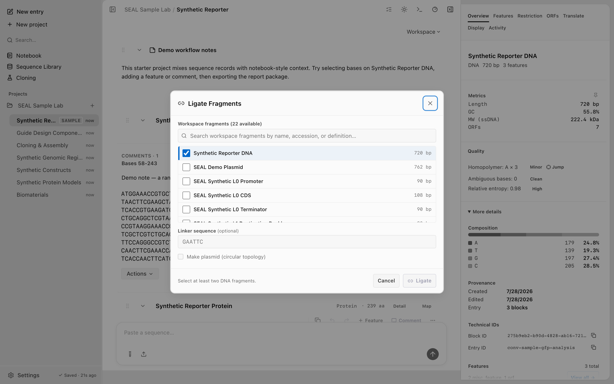
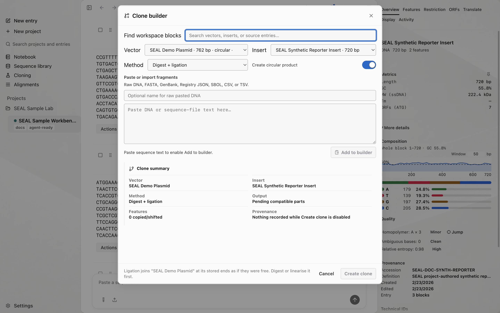

Cloning and assembly
Screenshots and recordings show the direct edition. Compare editions.
Plan Gibson, Golden Gate, GoldenBraid, hierarchical MoClo, ligation, and guided clone builds, then record which fragments produced each output. The desktop app is the complete builder surface; the CLI and MCP expose documented subsets.
Fragments into one assembled product
Choose an assembly method
The Cloning page exposes six starting points. Pick the one that matches how the fragments join and how much organization the design requires.
| Method | Joins fragments by | Automation boundary |
|---|---|---|
| Gibson assembly | Overlapping homology arms shared between adjacent fragments. | seal gibson and the desktop builder. |
| Golden Gate | Type IIS enzyme overhangs cut outside the recognition site. | seal golden-gate and the desktop builder. |
| GoldenBraid | Boundary-aware transcription-unit order and binary alpha/omega stacking. | Desktop Golden Gate dialog in a GoldenBraid organization mode. |
| Hierarchical / MoClo | Level-zero parts into transcription units, then higher-level constructs. | Desktop guided hierarchical builder. |
| Clone Builder | A chosen vector, insert, and guided junction method. | Desktop guided builder. |
| Ligation | Compatible ends from a restriction digest, joined directly. | Desktop builder and the ligate MCP tool. |
The desktop app pulls assembly candidates from across the workspace rather than only the open Entry. Its builders share the same fragment primitives, so part identity, order, ends, warnings, and provenance read consistently across workflows.
Every bundled Sample Lab backbone and part is a project-authored deterministic synthetic fixture. Clone Builder uses these records to demonstrate restriction, ligation, Gibson, Golden Gate, and GoldenBraid workflows.

Gibson assembly
Use seal gibson to assemble two or more fragments that share homology arms. Pass the fragments as positional arguments (raw text, file paths, or library names). SEAL finds the overlap between each adjacent pair and joins them.
seal gibson insert.fa vector.fa --min-overlap 25The overlap search is bounded by two flags. --min-overlap sets the shortest homology arm that counts as a join; an overlap shorter than this fails. --max-overlap sets the longest overlap length to search. The defaults are 15 bp and 100 bp.

| Flag | Default | Description |
|---|---|---|
--min-overlap <n> | 15 | Minimum homology-arm overlap in bp. A shorter overlap fails. |
--max-overlap <n> | 100 | Maximum overlap length to search. |
--circular | false | Circular assembly. The last fragment must also overlap the first. |
--validate | false | Validate overlaps only; do not assemble. |
--save <name> | none | Save the assembled sequence to the local library. |
--json | false | Emit structured JSON output. |
For a circular product, add --circular. The last fragment then has to overlap the first to close the seam, and a missing closing overlap is a hard error rather than a silently linear product.
seal gibson part1.fa part2.fa part3.fa --circular --jsonTo check that the overlaps are sound before you assemble, run with --validate. This validates the overlaps and stops without producing a product.
seal gibson a.fa b.fa --validate --min-overlap 30The product length is sum(fragment lengths) - sum(overlap lengths), because each overlap is shared by two fragments and appears once in the product. Use this to sanity-check an assembled size against what you expect.
Golden Gate (Type IIS)
Use seal golden-gate to design overhangs for a set of fragments assembled with a Type IIS enzyme. A Type IIS enzyme cuts outside its recognition site, so the recognition sites drop out of the product and the fragments join at defined overhangs.
seal golden-gate part1.fa part2.fa part3.faThe default enzyme is BsaI. Switch enzymes with --enzyme, which accepts BsaI, BbsI, BsmBI, and Esp3I.
seal golden-gate part1.fa part2.fa --enzyme BsmBI --jsonGolden Gate fails when a fragment carries an internal copy of the enzyme's recognition site, because the enzyme would cut inside the part. Screen for those sites first with --check, which reports internal Type IIS sites without assembling.
seal golden-gate part1.fa part2.fa --check| Flag | Default | Description |
|---|---|---|
--enzyme BsaI|BbsI|BsmBI|Esp3I | BsaI | Type IIS enzyme to use for the assembly. |
--check | false | Report internal Type IIS sites without assembly. |
--domesticate | false | Mutate internal recognition sites before output. |
--json | false | Emit structured JSON output. |
--save <path> | none | Write output to file. |
If a part does have an internal site, you have two options: domesticate the part, or change the assembly. Pass --domesticate to mutate internal recognition sites before output. To screen the same sites another way, seal sites exposes a curated golden-gate-type-iis preset (see the CLI reference).
In the desktop app, the Golden Gate builder walks the same flow: select entries, order them as a transcription unit, screen internal Type IIS sites, choose existing sites when they are valid, generate PCR tails when existing sites are absent or invalid, then preview and export the product after the order and overhangs are confirmed.

GoldenBraid and hierarchical MoClo
GoldenBraid is an organization mode inside the desktop Golden Gate surface. A transcription-unit plan assigns boundary-compatible promoter, coding-sequence, and terminator roles; the stack mode accepts exactly two curated transcription-unit products for one binary alpha/omega round. The dialog names the active grammar, shows expected boundaries, and blocks incompatible selections rather than silently reordering them.
The separate Hierarchical / MoClo builder guides level-zero parts into transcription units and then into higher-level constructs. These richer organization flows do not currently have standalone Rust CLI commands. Review the complete consequence preview and Activity record in the desktop app.
Ligation
Ligation joins fragments by compatible ends from a restriction digest, with no homology arms or Type IIS overhangs. There is no standalone seal ligation subcommand; run ligation from the desktop Ligation builder or over MCP.
A typical restriction-cloning sequence is: digest the vector and the insert, take the fragments you want, then ligate them. From the CLI you do the digests with seal digest (see Restriction digest) and screen ends with seal sites. Over MCP, the ligate tool joins selected digest fragments by name, and clone_into runs the whole vector-plus-insert restriction clone in one call.

{
"tool": "ligate",
"arguments": {
"fragments": [
{ "name": "synthetic-backbone_EcoRI_BamHI_frag1" },
{ "name": "synthetic-insert_EcoRI_BamHI_frag1" }
],
"saveTo": "seal-synthetic-assembly"
}
}See MCP tool reference for the full tool list.
The Clone Builder
The Clone Builder is the desktop dialog for restriction cloning when you want to choose specific fragments rather than letting an automatic clone take the largest backbone and insert. It shares the same fragment rows as the Gibson, Golden Gate, and Ligation builders, so a digest fragment, an overhang, and a part read the same way across every method.
Use it when you need to pick a particular vector backbone fragment or a non-default insert fragment, stage candidates from across the workspace, and review the order before you commit. The Cloning page launches the Clone Builder alongside the other builders.

Assembly lineage
A multi-fragment assembly cannot be described by a single parent, because the product comes from several source blocks at once. Record that relationship with the TypeScript blocks link-parts command. Prepare the TypeScript CLI first. It writes the lineage edge the desktop app reads to show that a construct was assembled from N source blocks, and stamps the construct's manipulation field.
npm --silent run dev:cli -- blocks link-parts --construct my-plasmid --parts part1,part2,part3 --manipulation golden_gate_assembly| Flag | Default | Description |
|---|---|---|
--construct <name|id> | none | The assembled output block (required). |
--parts <list> | none | Comma-separated source block names or ids, all in the same conversation (required). |
--manipulation <kind> | gibson_assembly | gibson_assembly, golden_gate_assembly, ligate, or vector_insert. |
--summary <text> | auto | Human-readable summary stored on the event. |
The Rust assembly commands print a result without saving a workspace block. Gibson's text output includes an assembly summary, so extract the sequence from JSON before passing it to TypeScript blocks add.
Replace the example files, Entry ID, and part references with your own. The source parts must already exist as blocks in the target Entry. Set SEAL_DB_PATH to the active path from SEAL's Agent Setup.
seal gibson part1.fa part2.fa part3.fa --circular --json > assembly.json
node -e '
const fs = require("node:fs");
const result = JSON.parse(fs.readFileSync("assembly.json", "utf8"));
if (!result.success || !result.sequence) process.exit(1);
process.stdout.write(result.sequence + "\n");
' > assembly.txt
npm --silent run dev:cli -- blocks add assembly.txt \
--name "Assembled plasmid" --type dna --topology circular \
--conversation-id "assembly-entry-id"
npm --silent run dev:cli -- blocks link-parts --construct "Assembled plasmid" \
--parts part1,part2,part3 --manipulation gibson_assemblyRun each step after the previous command succeeds. Review assembly.json before adding the construct. The final command links existing blocks; it does not verify that their sequences match the assembly input files.
The --parts blocks must already exist in the same conversation as the construct. Add each part as a block first, then run link-parts. These commands read and write the shared SQLite workspace; see Architecture for how the database path resolves.